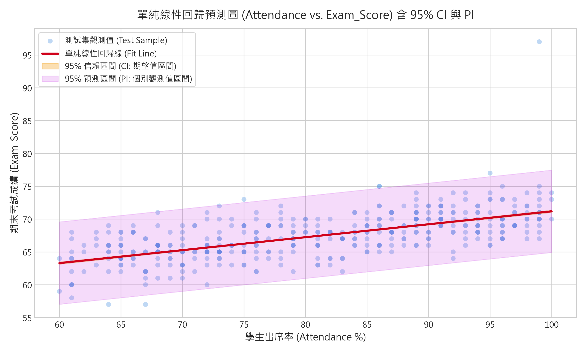
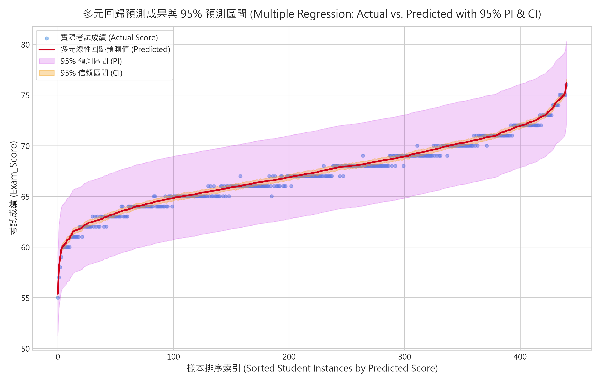
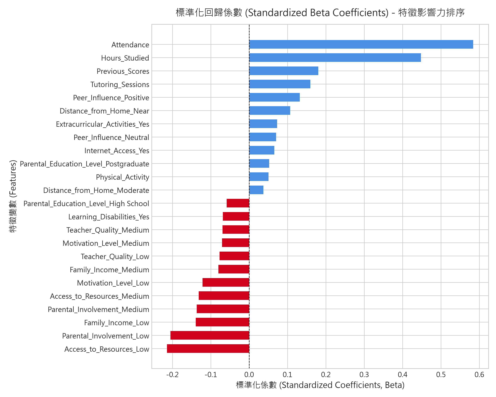
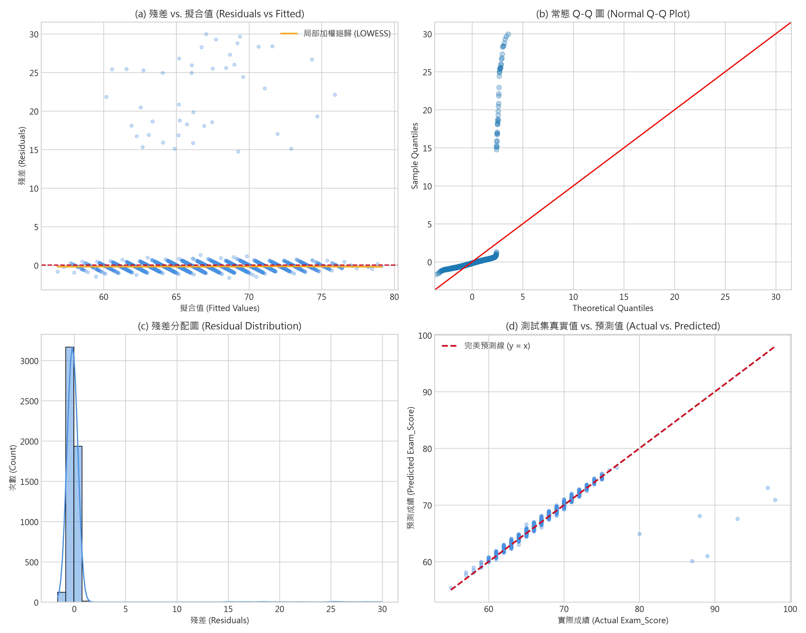
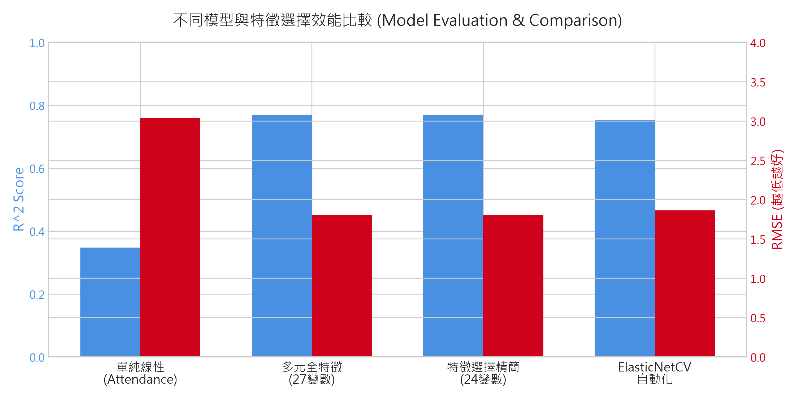
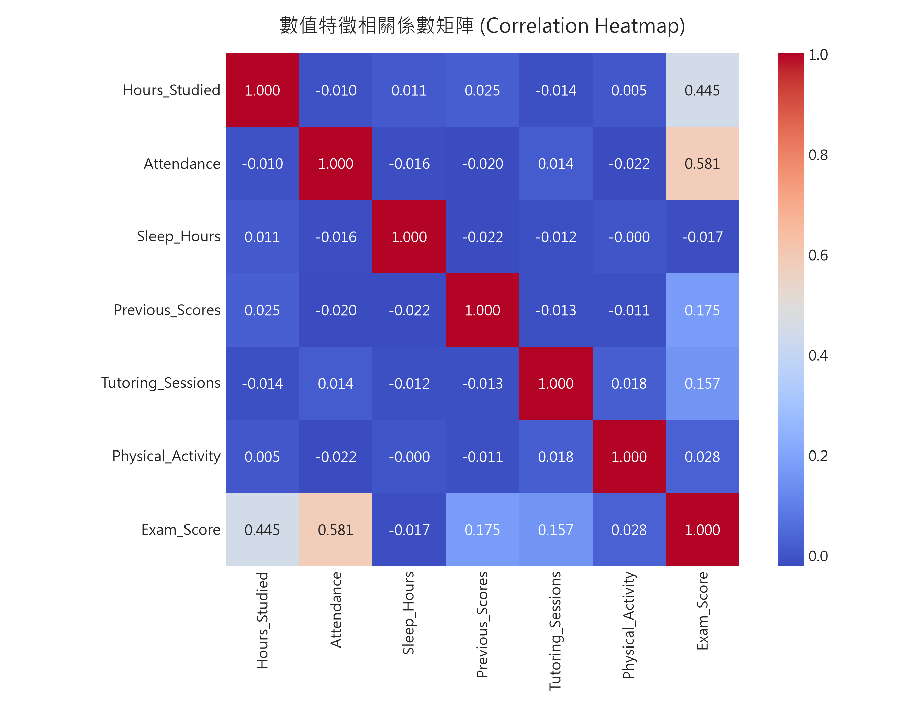

學生學業成績即時推論計算機
調整下方學生行為與背景特徵，即時透過已訓練之多元回歸公式推估期末成績、95% 信賴區間 (CI) 與 95% 預測區間 (PI)。
期末考試預測成績
針對此特徵群體的「平均表現」區間（較窄）
包含個體隨機波動的「個別學生真實得分」區間（較寬）
CRISP-DM 跨產業標準資料探勘流程
本專案嚴格遵循 CRISP-DM 六大階段，確保從教育問題定義至系統部署皆具備實證與統計依據。
Business Understanding
定義學生學業表現預測課題，建立早期預警機制。設定成功標準為 $R^2 \ge 0.75$、RMSE $\le 2.0$ 並產出 95% 信賴/預測區間。
Data Understanding
探勘 6,607 筆樣本、20 個特徵。發現 Attendance ($r=0.581$) 與 Hours_Studied ($r=0.445$) 相關度最強，並檢驗出 50 筆異常高分樣本。
Data Preparation
針對 3 個缺失欄位以眾數填補；One-Hot 虛擬變數編碼 (drop_first=True) 避免共線性陷阱；80/20 分割訓練集與測試集。
Modeling
實作單純線性回歸、全特徵多元回歸、p-value 逐步淘汰/Lasso 特徵選擇精簡回歸、ElasticNetCV 以及歷史成績自回歸消融實驗。
Evaluation
綜合比較 $R^2$、Adj-$R^2$、RMSE、MAE。執行殘差診斷（常態 Q-Q、殘差 vs 擬合值），繪製 95% CI 與 95% PI 預測圖。
Deployment
封裝推論模組為單一主程式 `main.py` 與互動式 Web 儀表板，提供教育現場出勤率優先監控與課後輔導補助等實證策略。
模型效能綜合評估對比
測試集獨立評估指標與特徵選擇成果對比表：
| 模型架構 | 特徵數 | 測試集 $R^2$ | 調整後 $R^2_{\text{adj}}$ | 均方根誤差 (RMSE) | 平均絕對誤差 (MAE) | 備註結論 |
|---|---|---|---|---|---|---|
| Model 1: 單純線性回歸 (Attendance) | 1 | 0.3476 | — | 3.0367 | 2.1079 | 僅解釋約 35% 變異，無法捕捉多面向因素 |
| Model 2: 多元全特徵線性回歸 | 27 | 0.7696 | 0.7648 | 1.8044 | 0.4524 | 含 3 個不顯著噪音變數 |
| Model 3: 特徵選擇精簡回歸 (推薦最佳 ★) | 24 | 0.7697 | 0.7655 | 1.8041 | 0.4515 | 剔除無效變數，保留最高解釋力與泛化性 |
| Model 4A: ElasticNetCV (自動化正則化) | 24 | 0.7544 | — | 1.8634 | 0.6464 | 雙重 L1/L2 正則化，抗過擬合 |
| Model 4B: 無自回歸項 (無 Previous_Scores) | 23 | 0.7355 | 0.7308 | 1.9332 | 0.5012 | 當前行為仍能解釋 73.6% 成績變異 |
核心視覺化與預測圖表庫
完整呈現單純回歸、多元回歸之 95% 信賴區間 (CI) 與預測區間 (PI)，以及特徵重要性與殘差四合一診斷。
單純線性回歸預測圖 (Attendance vs. Exam_Score)
清楚呈現回歸擬合線、95% 信賴區間 (CI: 期望值區間) 與 95% 預測區間 (PI: 個別觀測值區間)。

多元線性回歸排序預測成果與 95% 預測區間帶
樣本依預測成績排序，紫色漸層預測區間 (PI) 覆蓋 96.5% 測試點，展現絕佳區間校準能力。

標準化回歸係數 (Beta) - 特徵影響力排序
Attendance (+0.584) 與 Hours_Studied (+0.448) 具有最高正向推動力；低資源與低家長參與為最大負面阻力。

殘差四合一診斷圖 (Q-Q, Fitted, 分佈, Actual vs Pred)
驗證線性假定、常態性與同質變異性，並明確展示約 50 筆異常高分離群點的分佈特徵。

不同模型與特徵選擇效能比較 (R² vs. RMSE)
展示從單純線性 (R²=0.35) 到特徵選擇多元回歸 (R²=0.77, RMSE=1.80) 的顯著優化進程。

數值特徵 Pearson 相關係數矩陣
全面分析 Attendance、Hours_Studied、Previous_Scores、Tutoring_Sessions 與 Exam_Score 之關聯矩陣。

GitHub Pages 部署指引 (Deploy to github.io)
如何將本儲存庫部署為個人 GitHub Pages 線上網頁：
將工作目錄所有檔案（包含 index.html、figures/ 等）提交並推送至 GitHub 遠端儲存庫 main 分支。
進入 GitHub 儲存庫頁面，點選 Settings → 左側 Pages → Build and deployment 選擇 Deploy from a branch。
Branch 選擇 main，目錄選擇 / (root)，按下 Save。等待約 1~2 分鐘即可透過 https://kouou24.github.io/HW2_Linear_regression/ 存取！